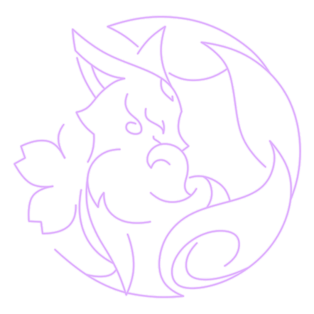
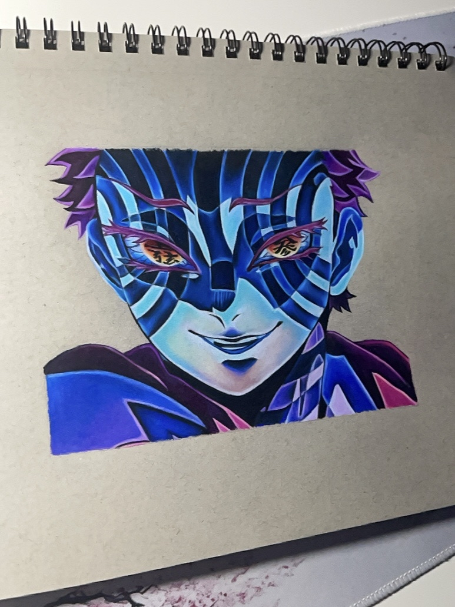
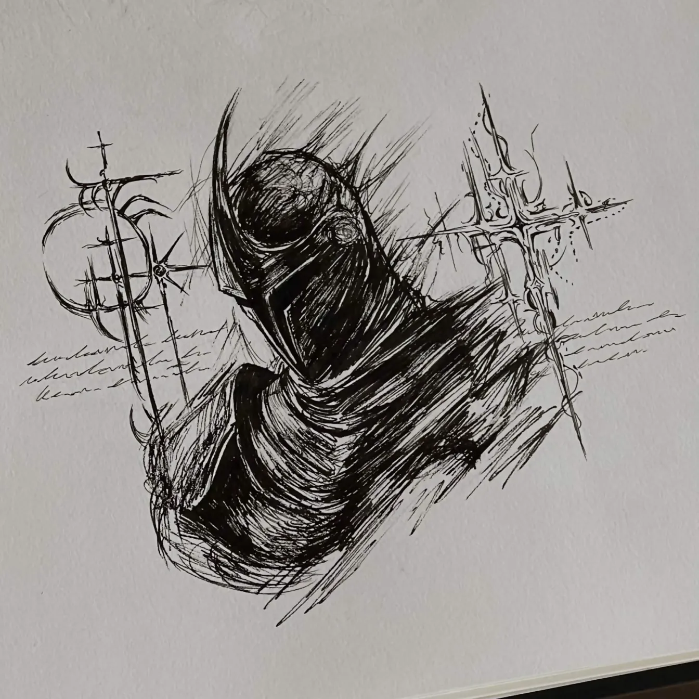

C1 Yakan Offering
If you were an Element
It would be Electro. Because your presence feels quiet at first glance, but impossible to forget once someone truly gets to know you.
You carry a kind of inner strength, confidence, and elegance that makes your special to my eyes. Your spark is calm but I know that confident girl who isn't afraid to show her true self.
C2Fox's Mooncall
Your Art


C3 The Seven Glamours
If you were a Kanji
Color, brilliance and skillful.
If a kanji should describe you, it would definitely be this one. Because like this kanji, your creativity gives color to everything around you. Through your drawings, your voice, your confidence and the way you see the world, you leave something vivid and beautiful behind. I admire the way you are. .
C4 Sakura Channeling
What makes you Unique
Creative
Caring
Confident
Quietly Strong
Curious
Old
C5 Mischievous Teasing
If you were Characters
Yae Miko
Elegant, mysterious, confident, and teasing.
Yae Miko has a calm presence that never needs to force attention. She carries herself with elegance, intelligence and confidence, like someone who knows her own worth without having to prove it. Her Electro energy feels refined and graceful — soft on the surface, but impossible to ignore.

Marin Kitagawa
Creative, expressive, passionate, colorful and sincere.
Marin shines through the way she loves what she loves without hiding it. She is full of creativity, confidence and emotion, turning passion into something bright and alive. Her energy feels warm, artistic and genuine — the kind of presence that makes a world feel more colorful.
C6 Forbidden Art: Daisesshou